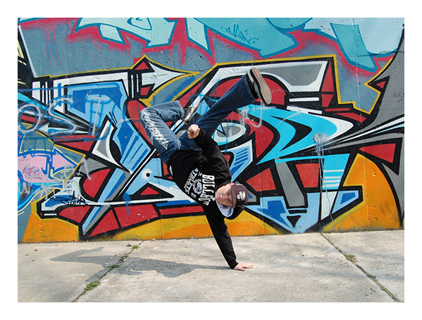

名家风采
李红，黑龙江人．中国油画家、色彩学家，自幼喜好美术．初中起跟名师学画。1985年进鲁迅美术学院五年制油画本科深造、毕业后长期坚持油画创作和色彩研究，多次参加全国、省各种美展、并自1983年起，先后在国内外举办了十多次个人画展，发表油画艺术论文集《当代油画风景创作谈》具首创性、入选《中华文库》，油画作品充满激情、是“主客观结合的美的自然流露”，真诚、质朴、美，具“朴实的瑰丽”风格，入选《中国现代艺术精品集》、《当代绘画艺术》、《中国美术选集》、《中国美术家选集》、并为国内多家美术馆、博物馆和美国、德国、丹麦、新加坡、香港、台湾等国家、地区美术馆、博物馆、画廊及个人收藏，在广州美术院创开艺用色彩学课程，其出版近40万字专著《风景色彩学》，还出版了多种画集，如《于忠祥油画作品选》、《于忠祥油画选》、《于忠祥油画》等，简历入选《中国现代美术家人名大辞典》、《中国当代名人录》、《世界名人录》等多种辞典。

张悦，著名时尚摄影师，2001年加入时尚芭莎杂志，成为美术编辑，2003年前往英国留学，在伦敦艺术大学学习摄影制作专业，获学位，2005年毕业后成功签约英国Premier摄影经纪公司，后回国发展，并逐渐在时尚界树立了自己鲜明的个人风格，目前，活跃在时尚摄影界，成为成功的青年摄影师。
2001年加入时尚芭蕾杂志，成为美术编辑。 2005年获伦敦艺术大学印刷学院专业摄影制作专业硕士。 2008年邀请为英国首相托尼布莱尔拍摄肖像及杂志封面。 2009搜狐时尚盛典-2009年度最佳时尚摄影师。 2012年芭莎邀约拍摄好莱坞明星阿德里安·布劳迪。 2012年ELLE Style Awards 年度中国摄影师大奖。在所有的艺术形式中，音乐是最擅长于抒发情感、最能拨动人心弦的艺术形式，它借助声音这个媒介来真实地传达、表现和感受审美情感。音乐在传达和表现情感上，优于其他艺术形式，是因为它所采用的感性材料和审美形式——声音最合于情感的本性，最适宜表达情感。或庄严肃穆，或热烈兴奋，或悲痛激愤，或缠绵细腻，或如泣如诉……音乐可以更直接、更真切、更深刻地表达人的情感。
舞蹈是一种人体动作的艺术。但是，这个人体动作，必须是经过提炼、组织和美化了的人体动作--舞蹈化了的人体动作。另外，属于人体动作范畴的艺术也有许多种，如杂技、哑剧、人体雕塑、韵律操等等。所以，舞蹈不同于别的人体动作艺术的主要方面是：它是以舞蹈动作为主要艺术表现手段、着重表现语言文字或其他艺术表现手段所难以表观的人们的内在深层的精神世界--细腻的情感、深刻的思想、鲜明的性格，和人与自然、人与社会、人与人之间以及人自身内部的矛盾冲突，创造出可被人感知的生动的舞蹈形象，以表达舞蹈作者（舞蹈编导和舞蹈演员）的审美情感、审美理想，反映生活的审美属性。
时装表演是最接近于生活的舞台艺术。这样讲不仅仅是指时装对人们生活中着装、服饰起到重要的引导作用，最主要的还是指时装表演中的动作取之于生活，忠实于生活，并且要高于生活。当然，对生活中的动作不能完全不变的照搬。虽然艺术是源于生活的，但又必须是高于生活的才会更具魅力。以模特的摆胯动作为例，如果用模特的摆胯动作走在街上，一定会给人一种卖弄的感觉。但为什么在T形台上模特们摆起胯来，不仅没有人提出异议，反而被人们欣赏呢？这是因为摆胯是服装模特表现服装的专有动作，是体现风度和自信的手段，是表现轻松、潇洒的方法，是展现服装灵性的形体语言。模特们在台上表演服装时，为了表现服装的灵性和内涵，需要将个人良好的气质风度融于服装的展示动作中，需要将服装在不同环境中的风韵、特点表现在动作上。